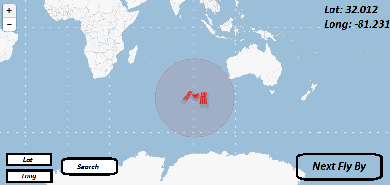

So originally I wanted to make an application that would take user input and spit out tweets geo location on to the google map. However, just getting an application to authenticate with Twitter's API was a major hassle of its own, especially when I barely have knowledge of PHP. The API wanted server side only authentication to get a simple JSON file.
So sadly I had to change directions, and pretty late too. Nonetheless, I am confident Where's the Space Station will be easier to implement and won't require the pain staking process of OAuth like Twitter's API requires.
So sadly I had to change directions, and pretty late too. Nonetheless, I am confident Where's the Space Station will be easier to implement and won't require the pain staking process of OAuth like Twitter's API requires. Where's the Space Station is going to be an application that will be developed in HTML5/Canvas. This application will utilize the Open Notify API and the Google Maps API. The goal of the application will be to visualize the current ISS position over the globe, as well as allow the user to input any latitude and longitude to determine the next time the ISS will pass by. Should everything fall within scope I hope to either implement a third API to tell you the weather on the days the ISS passes by or even an API that tells you the locations of other orbiting objects.
The UI will allow the user to get additional information out of the application. It will display locations for the ISS. A button will be used for determining the next time the ISS will be seen from the devices current location. Lastly there will be an input fields for other locations that aren't your current location.